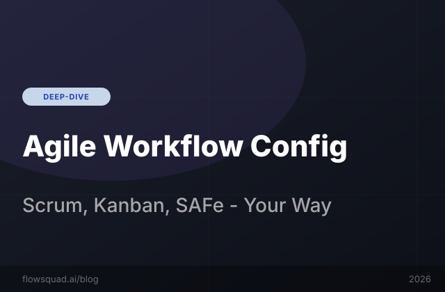

Enable/disable tabs, configure branching rules, toggle SAFe mode — FlowSquad's SDLC workflow is customisable per product, not one-size-fits-all.
FlowSquad's workspace is organized into 8 functional tabs, each representing a phase of the AI-assisted SDLC process. Tabs are configured per product by the Product Admin and are immediately reflected in the navigation for all users assigned to that product. Disabling a tab hides it from the UI and prevents API access to its endpoints for non-admin users — no partial states, no orphaned data.
The Analyze tab runs code ingestion, Tree-sitter parsing, and ONNX embedding to build the product's semantic index. The Design tab handles HLD (High-Level Design) and LLD (Low-Level Design) generation from the analyzed codebase or from requirements text. The Epics, Stories, and Tasks tabs form the decomposition hierarchy, each with its own AI generation, editing, and approval workflow. Quality runs OWASP Top 10 and Semgrep security scans. AskProduct provides multi-turn codebase Q&A. TestCases generates test cases from Stories and acceptance criteria.
| Tab | Description | SAFe | Scrum | Kanban | Disableable? |
|---|---|---|---|---|---|
| Analyze | Code ingestion & indexing | ON | ON | OPT | Yes |
| Design | HLD / LLD generation | ON | ON | OPT | Yes |
| Epics | Epic decomposition | ON | ON | ON | No (core) |
| Stories | User story generation | ON | ON | ON | No (core) |
| Tasks | Task breakdown from Stories | ON | ON | OPT | Yes |
| Quality | OWASP / Semgrep scans | ON | ON | OPT | Yes |
| AskProduct | Codebase Q&A chatbot | ON | ON | ON | Yes |
| TestCases | Test case generation | ON | ON | OFF | Yes |
SAFe (Scaled Agile Framework) mode is a product-level toggle that restructures the decomposition hierarchy from 3 levels (Epic → Story → Task) to 5 levels (Portfolio Epic → Feature → Capability → Story → Task), matching the SAFe terminology and planning cadence used by large-scale enterprise programs. When SAFe mode is enabled, the Epics tab renames to Features, a new Portfolio Epics tab appears above it, and Story generation prompts automatically include Feature-level context for alignment with Program Increments.
SAFe mode also activates PI Planning artifact generation — FlowSquad can generate a Program Increment summary document (IP Iteration plan, team objectives, and ART-level dependency map) from the product's current Epic/Feature backlog. This document can be exported to Confluence with a single click, saving Scrum Masters and RTE coaches an estimated 4–6 hours per PI planning cycle on documentation preparation.
Branching rules in FlowSquad define preconditions for each workflow phase. A branching rule is a boolean gate: "Tab B cannot be activated until Tab A has at least N completed items." For example, a typical Scrum configuration might enforce: Stories cannot be generated until at least 1 Epic is approved; Tasks cannot be generated until at least 1 Story is approved; the Quality tab cannot be run until Analyze has completed successfully.
These rules prevent the most common workflow errors in collaborative teams: an over-eager analyst generating 50 Tasks before the Story set has been reviewed, or running a quality scan against a codebase that has not yet been indexed. FlowSquad's 6 default branching rules cover the standard sequential SDLC flow, but Product Admins can add, modify, or disable individual rules per product. Rules are displayed as a visual workflow diagram in the Product Settings → Workflow Rules panel.
Yes — and this is by design. A single FlowSquad instance might support a legacy Java monolith being gradually decomposed under SAFe, a new microservices product running two-week Scrum sprints, and a DevOps tooling product using Kanban with no fixed iterations. Each of these products has its own tab configuration, branching rules, LLM model selection, and integration settings. There is no global "workflow mode" that bleeds across product boundaries.
This product-level isolation is one of the most frequently cited reasons enterprise customers choose FlowSquad over point solutions that impose a single workflow model. Teams working on different products within the same organization often use radically different processes — FlowSquad accommodates this without requiring separate tool instances or compromising on the shared authentication, RBAC, and audit log infrastructure.
All three configurations are accessible from Product Settings → Workflow Configuration — a page available to Product Admins and Global Admins. Three preset templates (Scrum, Kanban, SAFe) configure tab visibility and branching rules in a single click, and can then be fine-tuned item by item. The configuration is immediately live — no restart required.
Yes. Enabling SAFe mode on an existing Scrum product does not delete or modify existing Epics, Stories, or Tasks. The existing Epics are re-categorized as Features in the SAFe hierarchy, and Portfolio Epics can be created to group them. The transition is non-destructive and can be reversed at any time.
Yes. If branching rules require Stories to be approved before Tasks can be generated, the auto-export workflow also respects this gate — Tasks will not be auto-exported to Jira until their parent Stories have been approved and exported. This ensures Jira always reflects a consistent, hierarchically valid backlog.
Absolutely. The "Custom" workflow mode allows you to enable any combination of tabs and define your own branching rules (or none at all). Many teams use FlowSquad purely for code analysis and HLD/LLD generation, with the Epics/Stories/Tasks tabs disabled entirely.
The AskProduct tab itself functions identically across workflow modes — it queries the same 4 VectorDB collections regardless of SAFe or Scrum configuration. However, in SAFe mode, the context injected into AskProduct queries includes Feature and Portfolio Epic metadata, allowing questions like "Which Portfolio Epic does the payment refund flow belong to?"
In Kanban mode, Epics and Stories are treated as a continuous backlog without sprint assignment. The Tasks tab is optional (default off in the Kanban template), and the TestCases tab is disabled by default. The focus is on flow state and continuous delivery rather than iteration-based planning. Sprint fields in Jira export are omitted, and instead stories are exported with Kanban column labels.